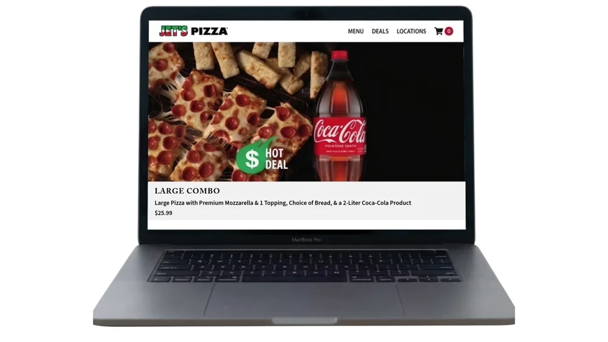
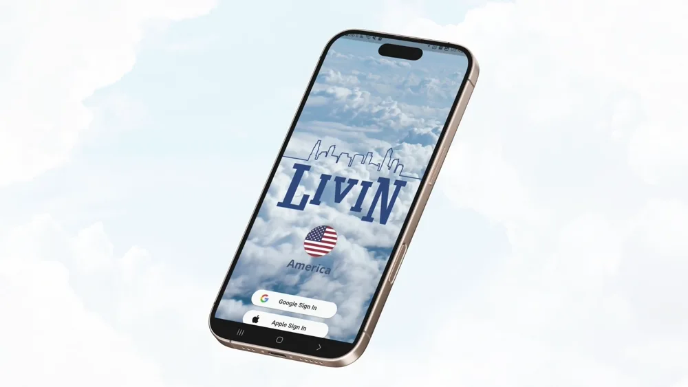
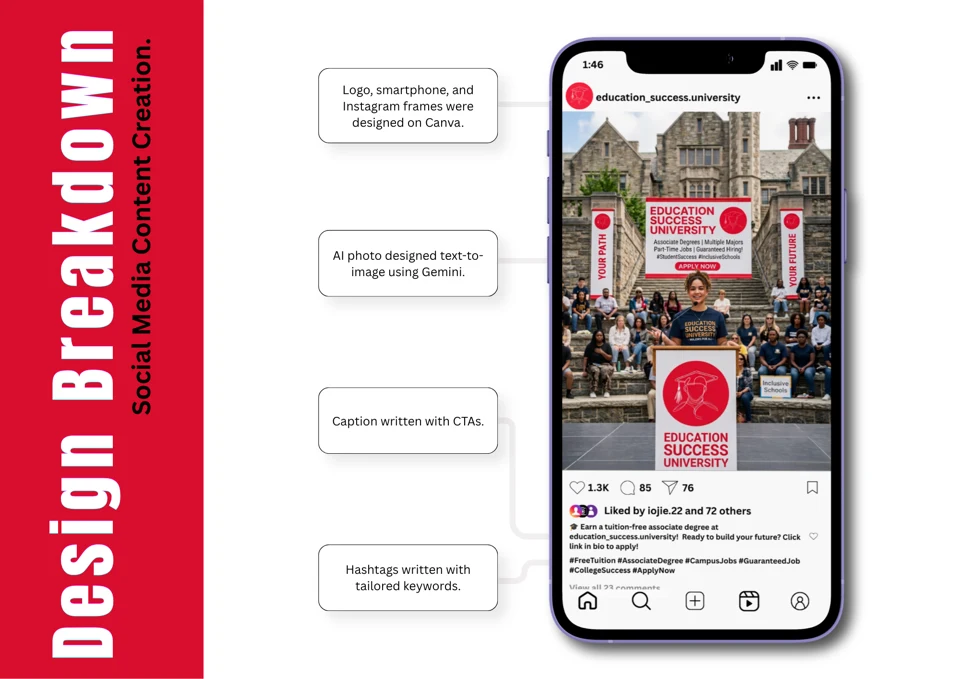
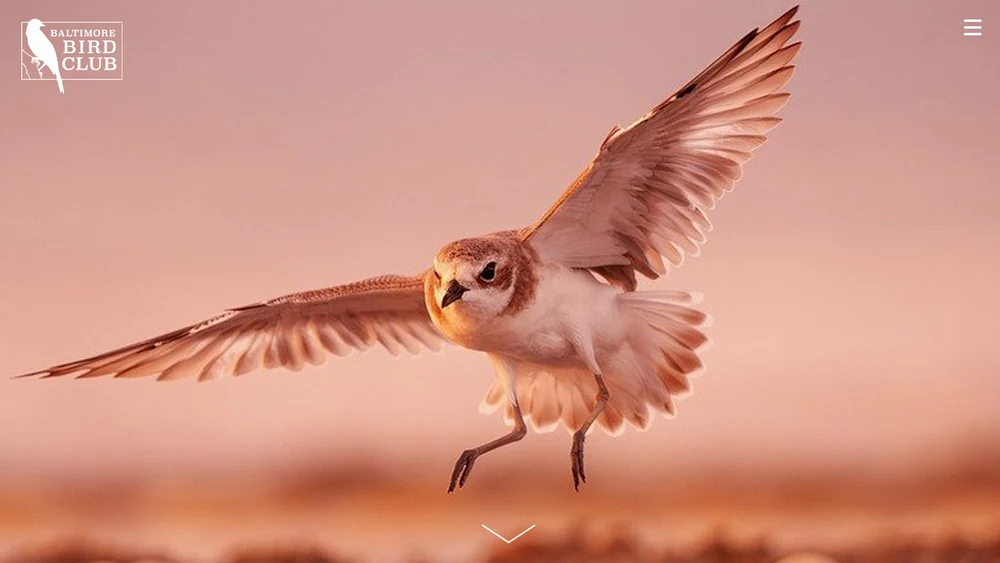
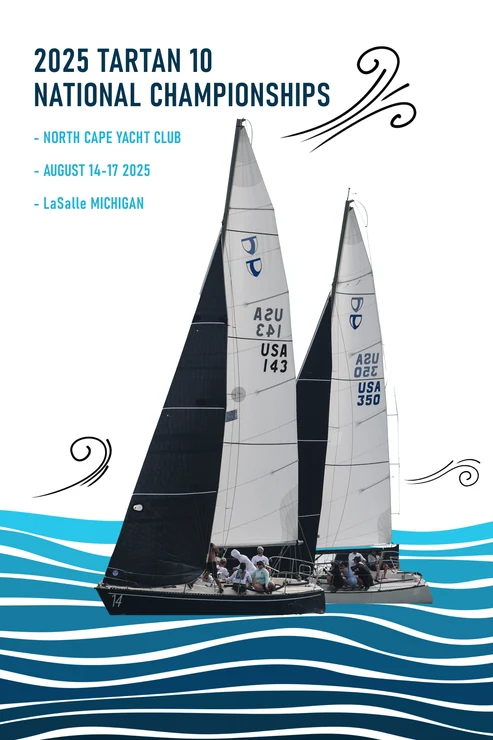

I design interfaces, create visual identities, and develop campaigns.


User research, interaction design, and interface case studies.

Brand identity, campaign strategy, and social content.


Logos, posters, web design, and editorial layouts.